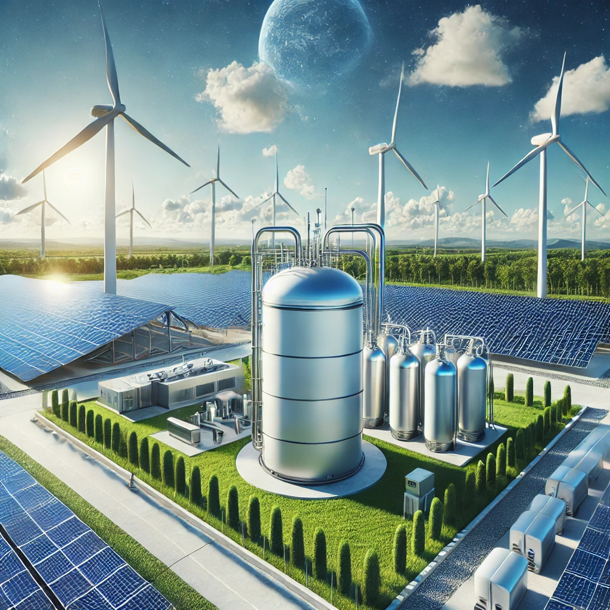

This domain is available for sale! Click here to inquire
Explore how zero-carbon gas is reshaping the energy industry for a sustainable future.
In the quest for a sustainable future, the energy sector is undergoing a profound transformation. Among the various innovations, zero-carbon gas stands out as a revolutionary technology poised to reshape how we think about and utilize energy. This article delves into what zero-carbon gas is, its potential impact on the energy industry, and why it's considered a game-changer.
Zero-carbon gas refers to fuels that produce no net carbon emissions when used. This includes:
The concept behind zero-carbon gas revolves around the lifecycle emissions of the fuel:
Zero-carbon gases can be integrated into existing infrastructure with minimal modifications. This compatibility allows:
Certain industries and applications, like heavy transport, aviation, and high-heat industrial processes, are challenging to electrify due to technical or economic barriers. Zero-carbon gas offers a solution:
With the rise of intermittent renewable energy sources like wind and solar, energy storage becomes crucial:
The shift to zero-carbon gases isn't just about environmental benefits; it's also an economic opportunity:
Scalability: Producing zero-carbon gas at scale requires significant renewable energy capacity and investment in infrastructure.
Cost: Currently, the cost of production can be higher than fossil fuels, necessitating policy support or technological advancements to become economically viable.
Policy and Investment: Governments and investors play a critical role in supporting the transition through regulations, subsidies, or funding research and development.
Zero-carbon gas presents a dual promise: reducing our environmental impact while maintaining energy security and economic stability. As technology progresses and costs decrease, it's likely we'll see an accelerated adoption rate:
Zero-carbon gas isn't just an alternative; it's a pioneering approach that leverages existing energy systems to achieve sustainability goals. As we move towards a net-zero future, the ability to produce, distribute, and utilize these gases will be integral to decarbonizing our energy landscape. With continued innovation, policy support, and investment, zero-carbon gas could indeed revolutionize the energy industry, offering a cleaner, more sustainable path forward.
If you're interested in purchasing this domain, please fill out the form below, and we'll get back to you as soon as possible.